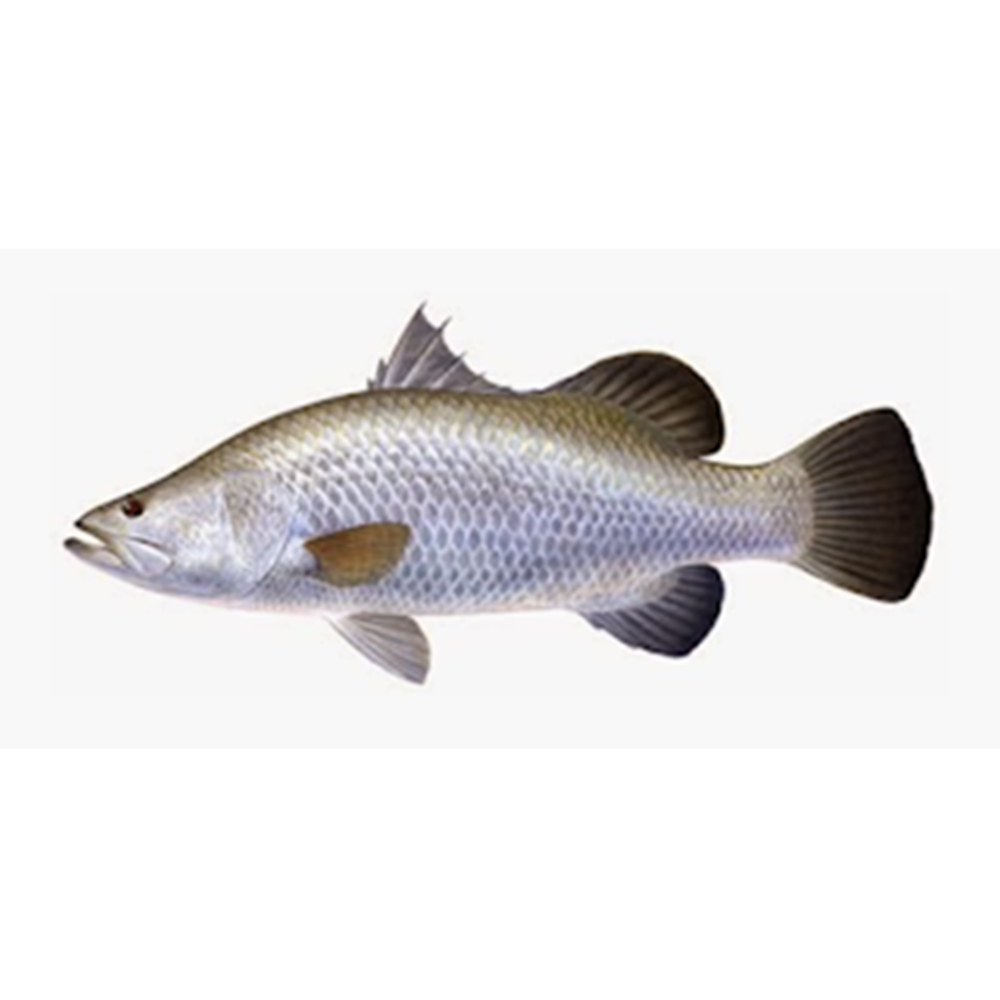

Ikan Kakap Putih
Ikan Kakap Putih, di Internasional dipanggil dengan nama Barramundi atau Sea bass adalah salah satu Jenis ikan ini tersebar luas di wilayah Hindia-Pasifik Barat mulai dari Asia Tenggara hingga Papua Nugini dan Australia Utara. Ikan yang panjangnya dapat mencapai hingga 18 meter ini menghuni perairan dalam rentang suhu 26−30 °C. Selain menyukai dasaran laut, kakap putih juga sering dijumpai di muara-muara atau air payau.
Ikan ini memiliki bentuk tubuh memanjang dengan mulut yang besar namun sedikit mencong dan rahang atas yang memanjang sampai ke kebelakang mata. Tepi bawah dari tulang pipinya (preoperculum) memiliki gerigi dengan duri tajam di bagian sudut. Tutup insang (operculum) memiliki duri kecil dan penutup bergerigi di atas pangkal gurat sisi. Ikan ini memiliki sisik tipe sisir (ctenoid) yang berukuran besar dan berwarna perak gelap atau terang tergantung pada lingkungan tempat hidupnya. Jika dilihat secara melintang, ikan ini tampak gepeng dan raut kepalanya terlihat jelas cekung. Sirip tunggal di punggung dan perutnya berduri sementara sirip pasang di dada dan panggulnya tidak. Sirip ekornya pendek dan bulat. Berat maksimal ikan ini sekitar 60 kg (130 lb), sementara panjang tubuh rata-ratanya sekitar 06–12 m (20–39 ft).Tubuh mereka bisa mencapai panjang 18 m (59 ft) meski jumlah ikan yang ditangkap di ukuran tersebut bisa dibilang jarang. Ukuran genomnya sekitar 700 Mb, yang diurut dan diumumkan dalam Animal Genetics (2015) oleh James Cook University.
Kandungan Ikan Kakap Putih
| Protein (%) | Kalori (Kal) | Lemak (%) | Besi (mg) | Kalsium (mg) | Fosfor (mg) | Vit A (SI) | Vit B1 (mg) | Air (%) | BDD (%) |
|---|---|---|---|---|---|---|---|---|---|
| 20 | - | 0,7 | 1 | 20 | 200 | 30 | 0,05 | - | - |
Manfaat Ikan Kakap Putih
- Menjaga Kesehatan Tulang
- Mencegah Terjadinya Kanker
- Mengatasi Sakit Jantung
- Menurunkan Hipertensi
- Mencegah Terjadinya Stroke
- Mengatasi Masalah Batu Ginjal
- Menjaga Kesehatan Mata
Tulang manusia, yang merupakan bagian tubuh yang sangat penting karena tulang memberikan postur tubuh, akan terus tumbuh hingga dirinya mencapai umur 21 tahun dan mulai melambat pertumbuhan nya hingga memasuki umur 30 tahun. Oleh karena itu, orang tua, yang memikirkan kesehatan tulang anaknya, akan memberikan nutrisi agar kesehatan sang buah hati terjamin terutama kesehatan tulang nya. Banyak perusahaan yang mulai menawarkan obat-obatan, suplemen dan susu, yang kesemuanya itu merupakan makanan atau obat pabrikan yang tentu ada dosis dan efek samping nya sehingga bisa membahayakan tubuh akan ketergantungan, yang bisa menjunjang kesehatan tulang. Menjaga kesehatan tulang sangatlah penting untuk dilakukan agar supaya tidak mengalami pengeroposan tulang. Untuk mencegah pengeroposan tulang, dapat dilakukan dengan memberikan suplai kalsium, yang dapat diperoleh dari susu maupun makanan lain, yang cukup pada tulang. Selain itu, mengkonsumsi ikan kakap merupakan solusi untuk mendapatkan kandungan kalsium untuk tubuh.
Kanker, dapat disebabkan oleh banyak hal mulai dari udara dan lingkungan sekitar maupun makanan yang dikonsumsi kurang sehat, merupakan penyakit yang timbul karena pertumbuhan sel yang buruk sehingga menyebabkan mutasi yang berlebihan pada tubuh. Salah satu manfaat dan khasiat ikan kakap adalah dapat mencegah kanker. Kenapa Begitu? Karena ikan kakap bisa mendorong pertumbuhan dan regenerasi sel tubuh secara wajar sehingga dengan pertumbuhan sel yang baik, tubuh tidak akan melakukan mutasi yang berlebihan bagi tubuh yang bisa menimbulkan sel kanker.
Seperti halnya dengan penyakit kanker, penyakit jantung juga sangat mematikan. Tidak akan ada yang menduga bahwa seseorang bisa kehilangan nyawa secara tiba-tiba akibat penyakit jantung yang dideritanya. Orang yang terlihat sehat, tiba-tiba, dapat tidak sadarkan diri akibat gangguan pada jantungnya. Penyakit jantung disebabkan oleh ketidakmampuan jantung dalam memompa darah ke seluruh tubuh sehingga aliran darah dan semua sistem organ dalam tubuh manusia akan terhenti. Untuk mencegahnya, dapat dilakukan dengan mengkonsumsi ikan kakap yang mampu membantu menguatkan jantung untuk memompa darah ke seluruh tubuh sehingga aliran darah dapat mengalir dengan lancar ke seluruh tubuh tanpa ada hambatan.
Hipertensi merupakan penyakit darah tinggi, akibat tidak lancarnya aliran darah dan ditandai dengan rasa pusing, yang biasanya menyerang orang tua, namun tidak menutup kemungkinan terhadap usia belia karena penyakit ini tergolong degeneratif. Untuk menurunkan hipertensi ini, orang awam biasanya memakan ketimun atau buah-buahan yang yang mengandung banyak air. Selain itu, untuk menurunkan hipertensi, bisa dilakukan dengan mengkonsumsi ikan kakap. Bagi seseorang yang menderita hipertensi karena keturunan tidak usah khawatir apabila sering mengkonsumsi ikan kakap. Hal ini disebabkan oleh ikan kakap akan melancarkan sistem peredaran darah anda.
Stroke, yang berarti juga kematian sistem saraf terutama saraf motorik (pergerakan), bisa menyerang seluruh tubuh, namun ada pula yang menyerang separuh badan. Hal ini disebabkan oleh peredaran darah yang kurang lancar sehingga jantung gagal memompa darah dan otak mengalami kerusakan akibat tidak mendapat suplai oksigen dan nutrisi. Dengan mengkonsumsi ikan kakap, peredaran darah menjadi lancar sehingga dapat mengaktifkan syaraf motorik yang mati karena stroke memiliki keterkaitan satu sama lain antara matinya sistem saraf dengan kurang lancarnya peredaran darah.
Batu Ginjal merupakan suatu kondisi di mana material keras yang menyerupai batu yang berasal dari sisa zat-zat limbah di dalam darah yang disaring oleh ginjal yang kemudian mengendap dan mengkristal seiring waktu di dalam ginjal sehingga menghambat kerja ginjal. Untuk mengatasi batu ginjal, tim medis merekomendasikan untuk melakukan operasi bedah. Namun jangan takut, untuk mengatasi batu ginjal ini tidak perlu dilakukan operasi, tetapi dapat juga dilakukan dengan cara mengganti pola makan di mana mengganti konsumsi daging menjadi ikan kakap. Kandungan Kalium yang terdapat dalam ikan kakap dapat menghancurkan kristal batu ginjal yang kemudian akan keluar bersama urin.
Seperti yang diketahui banyak orang, vitamin A sangat dibutuhkan dan baik untuk menjaga kesehatan mata. Kandungan vitamin A yang terdapat dalam ikan kakap, selain wortel, dapat mencegah terjadinya kerusakan mata dan menjaga kesehatan mata agar tetap jernih serta membantu bola mata terlihat segar dan bersih.